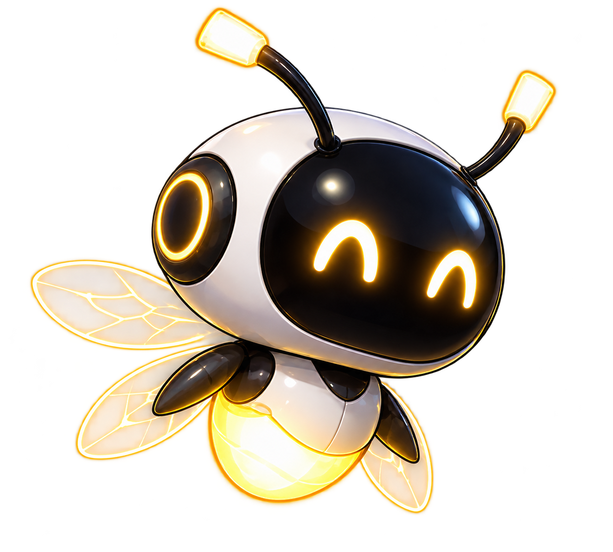

YOU / PICOSMALL LIGHT. BIG CONNECTIONS.
最初のひかりを、
いっしょに。
小さな機械生命体Picoと、飛ぶ練習をしよう。
動かす、止める、つなぐ。最後は、光になる。
練習は時間無制限・いつでもやり直せます。
本番のスコアや進行には影響しません。
時間を止めろ。結末を、描け。
FREEZE. DRAW. EXECUTE.
Picoの黄金のLINEで、シアンのTARGETをつなごう。
時間を止めて考え、危険を避けて、一気にEXECUTE。
DEAD/LINE — HTML · CSS · JAVASCRIPT
GRAPHICS: CANVAS / SOUND: WEB AUDIO

YOU / PICOSMALL LIGHT. BIG CONNECTIONS.
小さな機械生命体Picoと、飛ぶ練習をしよう。
動かす、止める、つなぐ。最後は、光になる。
練習は時間無制限・いつでもやり直せます。
本番のスコアや進行には影響しません。
CIRCUIT ATLAS / 01—05
止まった回路に、
もういちど ひかりを。
GARDENから旅をはじめよう。